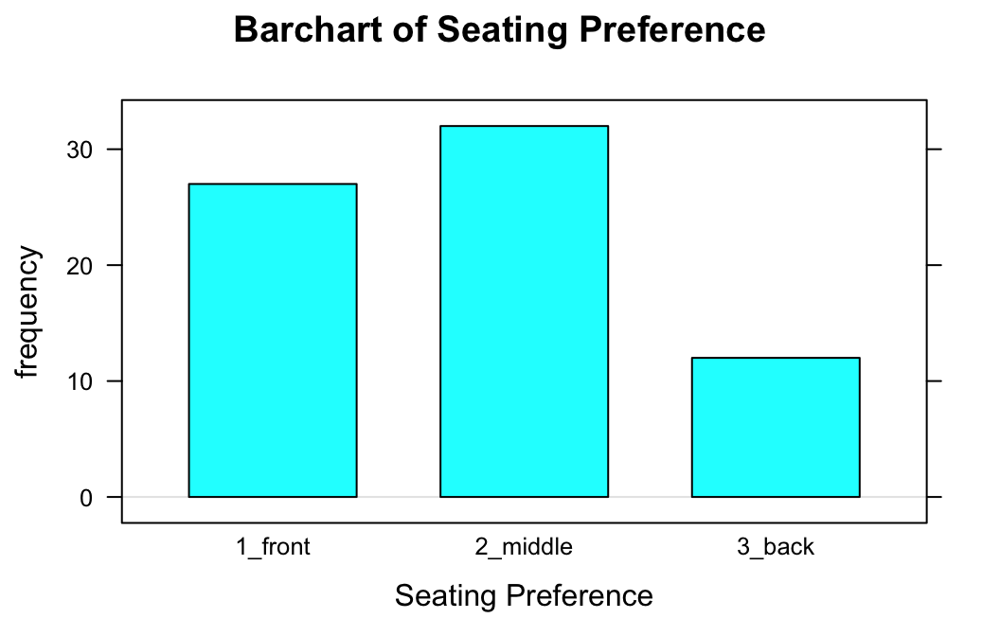
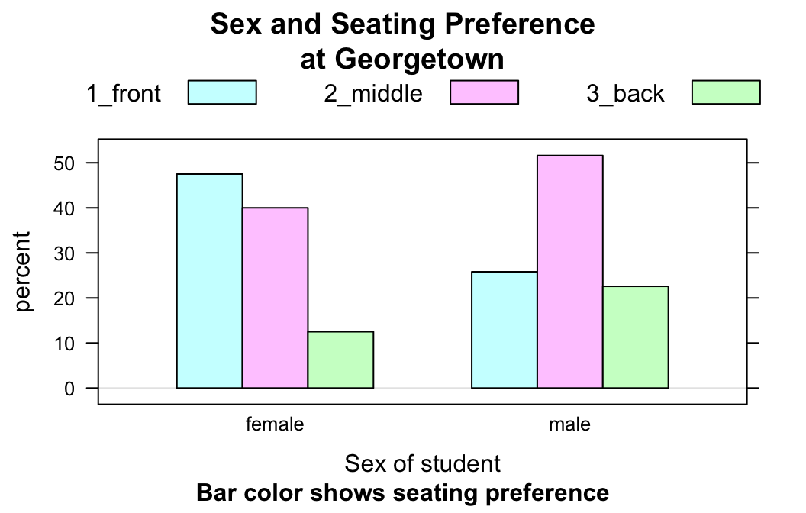
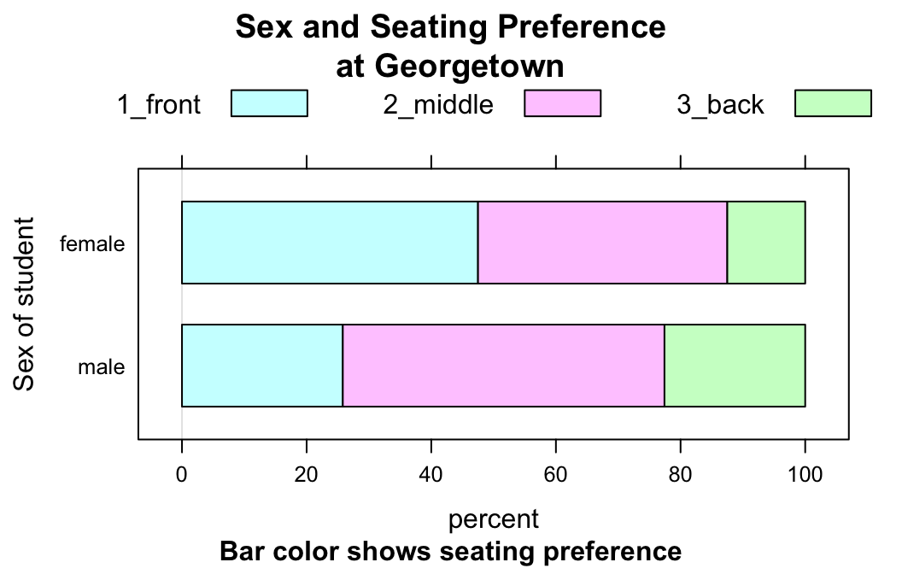
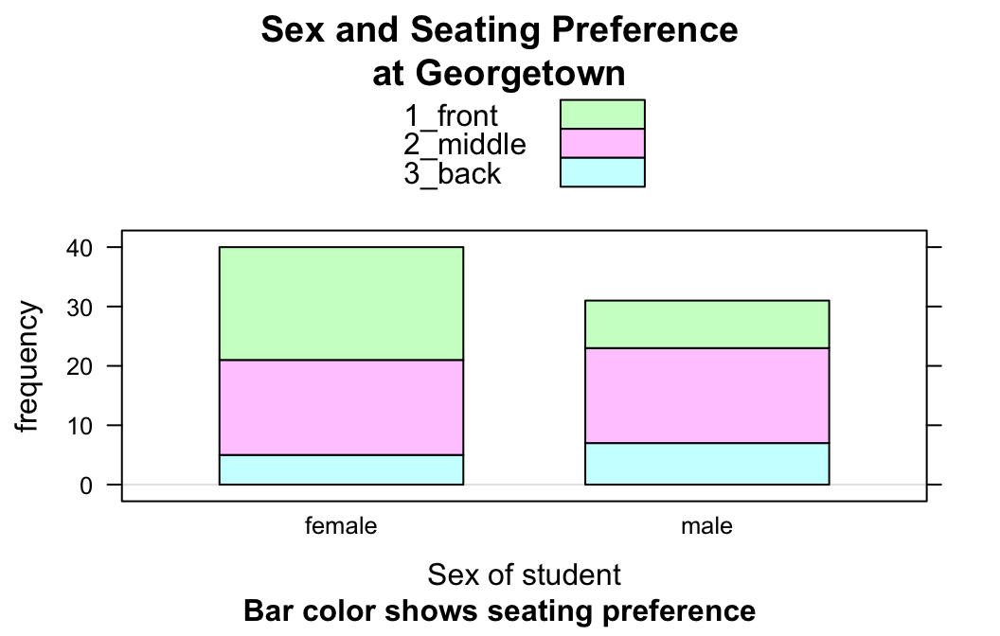
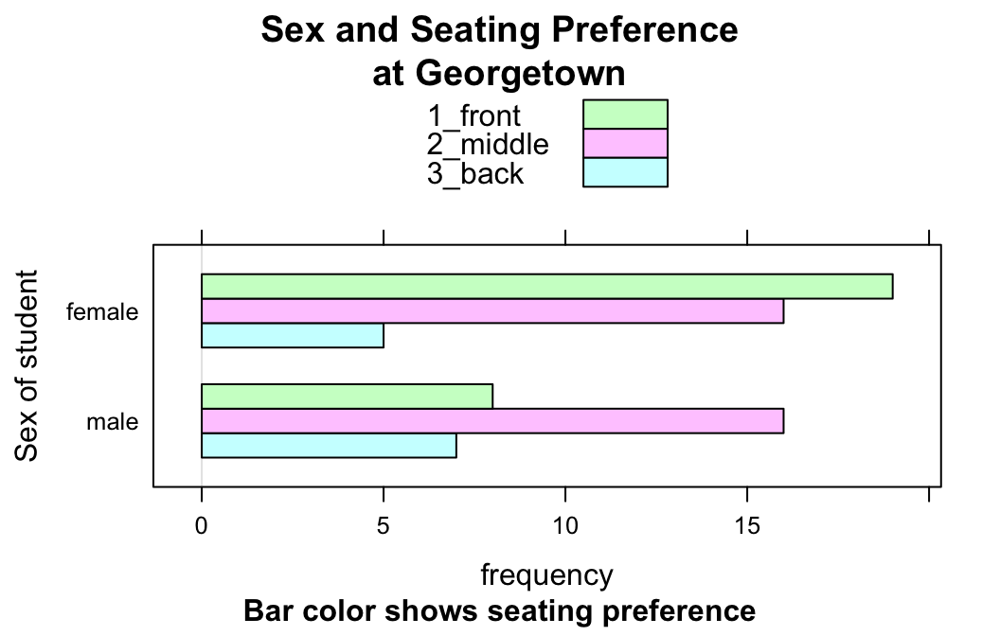
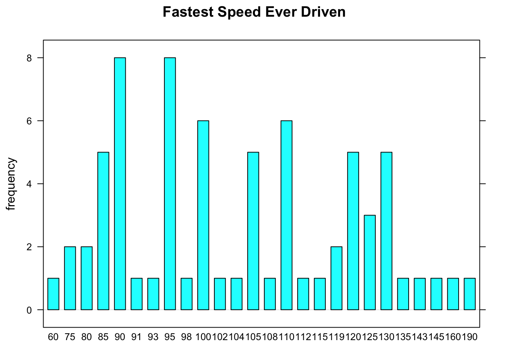

Using barchartGC()
Preliminaries
barchartGC() provides quick-and-easy bar charts for the graphical exploration of factor variables. The function comes from the tigerstats package and we will use some data from the tigerstats as well, so make sure that tigerstats is loaded:
require(tigerstats)In this tutorial we will work with the m111survey data frame from tigerstats package. If you are not yet familiar with this data, then run:
data(m111survey)
View(m111survey)
help(m111survey)One Factor Variable
To look see a bar chart for the tallies of the factor variable seat:
barchartGC(~seat,data=m111survey,type="frequency",
main="Barchart of Seating Preference",
xlab="Seating Preference")
In order to get the actual distribution of seat, you want percents rather than counts:
barchartGC(~seat,data=m111survey,type="percent",
main="Barchart of Seating Preference",
xlab="Seating Preference")
If you have a table of the counts for a variable, then you can enter it directly. For example, suppose you have already made:
Seat <- xtabs(~seat,data=m111survey)
Seat## seat
## 1_front 2_middle 3_back
## 27 32 12Then you can just enter the table:
barchartGC(Seat,type="percent",
main="Barchart of Seating Preference",
xlab="Seating Preference")Two Factor Variables
You can also use barchartGC() to study the relationship between two factor variables. For example, if you want to see whether males and females differ in their seating preferences, then you might try formula-data input as follows:
barchartGC(~sex+seat,data=m111survey,
type="percent",
main="Sex and Seating Preference\nat Georgetown",
xlab="Sex of student",
sub="Bar color shows seating preference")
Again, if you happen to have already made a two-way table, then you can just enter it:
SexSeat <- xtabs(~sex+seat,data=m111survey)
SexSeat## seat
## sex 1_front 2_middle 3_back
## female 19 16 5
## male 8 16 7Here is the bar chart from the two-way table:
barchartGC(SexSeat,type="percent",
main="Sex and Seating Preference\nat Georgetown",
xlab="Sex of student",
sub="Bar color shows seating preference")
Flat Bar Charts
To study the relationship between two factor variables through numerical summaries you might make a table of row percentages, as follows:
rowPerc(SexSeat)## seat
## sex 1_front 2_middle 3_back Total
## female 47.50 40.00 12.50 100.00
## male 25.81 51.61 22.58 100.00To get a bar chart that looks like a visual “copy” of the row percentages, set the argument flat to TRUE:
barchartGC(SexSeat,type="percent",
main="Sex and Seating Preference\nat Georgetown",
ylab="Sex of student",
sub="Bar color shows seating preference",
flat=TRUE)
Note that you might want a label for the y-axis, now.
Other Options
You can make vertical stacked bars:
barchartGC(SexSeat,type="freq",
main="Sex and Seating Preference\nat Georgetown",
xlab="Sex of student",
sub="Bar color shows seating preference",
stack=TRUE)
You can also make horizontal, unstacked ones:
barchartGC(SexSeat,type="freq",
main="Sex and Seating Preference\nat Georgetown",
ylab="Sex of student",
sub="Bar color shows seating preference",
stack=FALSE,
horizontal=TRUE)
Warning
Bar charts are for factor variables, not for numerical variables. Look what happens when you ask for a bar chart of fastest:
barchartGC(~fastest,data=m111survey,
main="Fastest Speed Ever Driven")
R tries to accommodate your request, but it ends up making something that resembles a very amateurish histogram. R draws a separate bar for each speed that appears in the data, making for a very “busy” graph. Worse yet, consecutive speeds are equally spaced from each other, even though the differences between consecutive speeds vary. For example, the spacing between the 90 ans 91 mph bars is the same as the spacing between the 160 and 190 mph bars. This is very misleading!
Additional Variables and Further Refinements
You can incorporate additional variables into your analysis by facetting, i.e., producing a plot with separate panels for each of several subgroups of the observations, as determined by one or two other variables. For this and further refinements, use the Lattice Bar Chart Addin in RStudio.